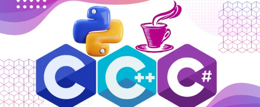

Bases
PARTICIPANTES
Podrán participar estudiantes inscritos formalmente en alguna institución de nivel medio superior del Estado de Guanajuato. Cada institución podrá inscribir hasta tres equipos, y cada equipo deberá estar integrado por 3 integrantes de la misma escuela preparatoria. Además, cada equipo deberá contar con un coach, quien será responsable de efectuar el registro en el sistema. Una persona puede ser coach de más de un equipo de la misma institución.
LENGUAJES DE PROGRAMACIÓN:
C, C++, Java, Python, C#.
